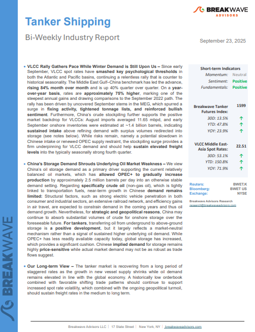
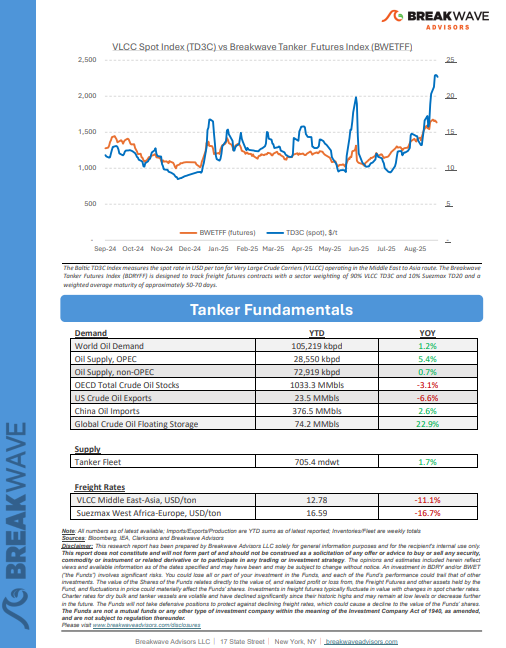
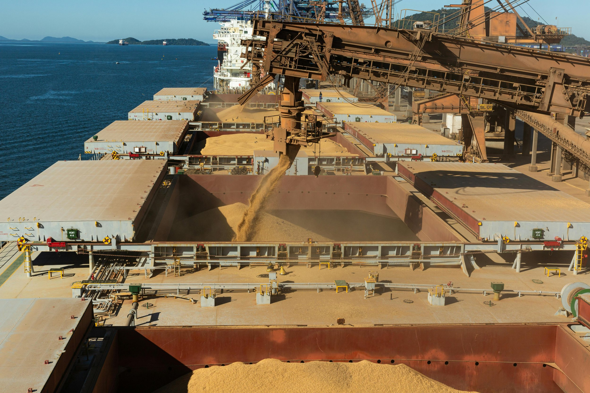

As the week comes to a close, take a moment to review the key insights from the past few days. Missed something? We've gathered all the top insights for you to catch up at your convenience.
VLCC Rally Gathers Pace While Winter Demand is Still Upon Us– Since early September, VLCC spot rates havesmashed key psychological thresholdsin both the Atlantic and Pacific basins, continuing a relentless rally that is counter to historical seasonality.


One year ago this week, the U.S. Federal Reserve commanded global attention by cutting interest rates for the first time in more than four years, delivering a bold 50 basis point reduction that brought the federal funds target range down to 4.75-5.00 percent.
Doric Weekly Market Insights
The United States Department of Agriculture (USDA) has released its latest forecast for the upcoming 2025/26 grain trade season..
From Commodore's Weekly Dry Bulk Reports
This week’s focus is on the volatility of dirty oil flows from the Baltic Sea's upper region.
Signal Ocean Tanker Weekly Market Monitor

In late August, according to Mysteel reports, Mauritania’s state-owned mining company SNIM and Saudi Arabia’s steel company Hadeed announced plans to establish a joint venture to develop an iron ore mine in Mauritania,
BRS Weekly Dry Bulk Newsletter
The illicit trading debate in shipping sharpened this month, with the U.S. Senate introducing the SHADOW Fleets Act to impose new sanctions on Russia’s “shadow fleet.”
Allied Weekly Report
China’s aluminium powerhouse is approaching a hard ceiling.
Intermodal Weekly Market Report
Brazil’s corn trades have experienced significant re-routing over the last two years.
Braemar Dry Bulk 360 Degrees
As we discussed in Commodore Research’s most recent Weekly China Report, China’s retail sales in August grew year-on-year by 3.4%, which has marked the lowest growth seen since November.
From Commodore's Weekly Dry Bulk Reports
The VLCC sector has returned to the center of attention, with spot freight rates soaring in September to levels close to $100,000 per day on certain routes.
Novisea
Global coal demand reached 8.79 billion tons in 2024, marking a new record.
Signal Ocean Dry Weekly Market Monitor